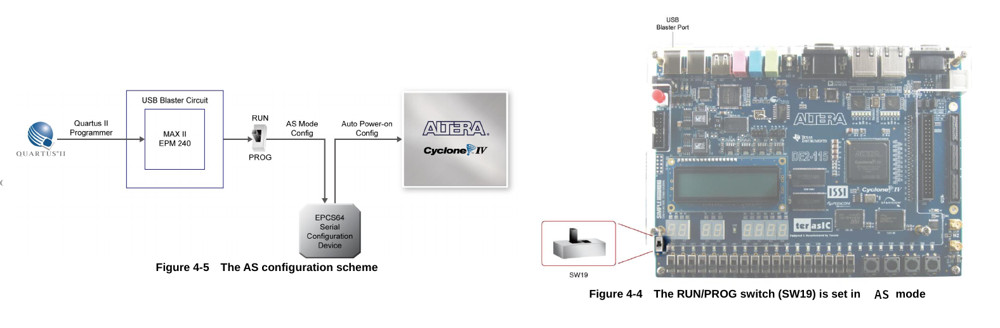
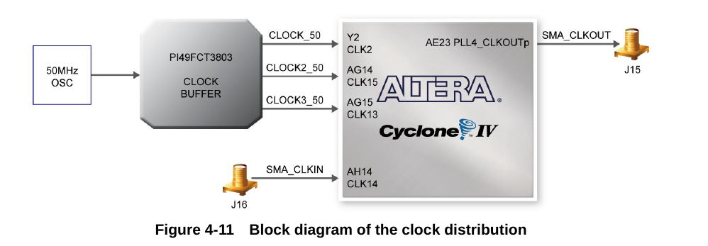

手邊有一台早期獲得的 Altera DE2-115 開發平台 ，一直放著積灰塵也不是辦法，再加上最近想多玩玩 FGPA，所以就來重新玩一次吧 :)
和 Xilinx Zybo Board 不同，Altera DE2-115 開發平台 是只有 FPGA 的開發板，並未包含 ARM Cortex-A9 來作為輔助用的 CPU，對於只想學 FPGA 的人而言，這算是不錯的平台，想要 CPU 的話，就自己寫個 CPU 上去或是用 NIOS-II 軟核 CPU 就好了。
總之，就讓我們來玩玩這一片早期的 FPGA 開發板吧 (想當年這一片可是要台幣 3W 的呢!)
不過在我們開始這一切之前，我們需要稍微了解一下這片開發板以及他的週邊等資訊。
要了解 Altera DE2-115 開發平台 的相關資訊，我們首先先到他的開發商 友晶科技 網站去下載 DE2-115 User Manual ，這本手冊會帶領我們了解這平台相關的週邊。
注意到這邊會刻意忽略掉 High Speed Mezzanine Card (HSMC) 接口，因為這個接口除非去買擴展板，不然對一般人而言不會有用到的機會。
基本硬體認識
拿到手的 DE2-115 就像這個樣子，從正面來看:
哇，這片板子週邊有夠多的，難怪不便宜，不過細節我們待會在說吧，先來看看背面還有什麼?
背後偷偷藏了一顆 EEPROM，未來我們有資料要存放的時候就需要他了！
了解了基本板子週邊後，接下來要來一個一個的研究吧~
方塊圖
上面的週邊資訊太複雜了，好在 DE2-115 User Manual 有提供方塊圖 (Block Diagram) 可以讓我們對這平台用的 IC 以及有的功能再進一步的了解
FGPA 核心
DE2-115 使用的 FPGA 核心是 Cyclone IV EP4CE115F29 ，是屬於 Cyclone IV 系列的，當然在一開始玩的時候只需要知道這個是哪個系列，可以裝下多少邏輯閘就夠了。
因此，就讓我們列一下這顆 FPGA 到底有多少能耐:
- 114,480 LEs (邏輯單元)
- 432 M9K 記憶體模塊
- 3,888 K bits 嵌入式存儲器
- 4 PLLs (鎖相迴路)
嗯… 看不懂，就只好引用一下 Mouser 上的圖啦 ~
這邊跳過部份資訊，如果想搞懂關於這顆 FPGA 的描述，包含 LE 是啥啦之類的，推薦看一下 FPGA 芯片内部硬件介绍 的說明。
JTAG
JTAG 是 DE2-115 上用來下載程式到 FPGA 用的界面，根據設定的不同，我們可以將其分成 JTAG Mode 和 AS-mode，下面就來講解這兩種模式的不同。
簡單的說:
- JTAG mode: 一般下載用，斷電後資料消失。
- AS mode: 下載後，即使斷電資料也會保存。
JTAG mode
JTAG mode 是一般下載用的方式，缺點是斷電後資料不會保存在板子上。如果你想要下載後重新上電可以執行上一次下載的程式的話，請使用 AS mode。
使用 JTAG Mode 的時候，請注意以下步驟:
- 接上電源
- 設定 SW19 在
RUN的位置 - 接上 USB type B 線到 USB Blaster 的位置
- 透過 QUartus II 選擇適合的位元流 (.sof) 檔案進行下載
JTAG AS mode
當我們想要斷電再上電後，還可以執行上一次下載的程式的話，這時候就需要透過 AS Mode 來進行。
AS Mode (Active Serial Programming) 會將位元流下載到 EPCS64 這顆串口 IC，該晶片除了可以透過串口 (Serial) 下載外，同時也是一個儲存裝置，可以存放共 64MB 大小的資料。當電源啟動的時候，DE2-115 會從 EPCS64 拉取資料，完成 FPGA 的設定，這也是為何 AS Mode 可以在斷電的情況下保持資料的原因。

使用 AS Mode 的時候，請注意以下步驟:
- 接上電源
- 接上 USB type B 線到 USB Blaster 的位置
- 設定 SW19 在
PROG的位置 - 透過 QUartus II 選擇適合的位元流 (.pof) 檔案下載到 EPCS64
- 下載完成後，將 SW19 切換回
RUN的位置，這樣會讓 DE2-115 在開機的時候抓取 EPCS64 上的資訊。
JTAG Chain
除了 JTAG mode 和 AS mode 外，如果我們想要透過 DE2-115 將資訊下載到別的 Altera FPGA 開發板的話，這時候就是使用 JTAG Chain 的時機。
參照上圖，當我們要使用 JTAG Chain 的時候，需要將 JP3 的 pin2 和 pin3 短路，讓 JTAG 訊號可以透過 HSMC 接口出去。
如果 JP3 的 pin1 和 pin2 短路 (預設) ，此時形成一個封閉的迴路，這時候 JTAG 在下載的時候只會偵測到 DE2-115 上的 FPGA 晶片。
按鈕
DE2-115 共有四個按鈕 (Push Button)，這些按鈕都接上了施密特觸發器(Schmitt trigger)來對按鈕去除彈跳 (debounce)
也因為已經在電路上做了防彈跳功能 (debounce)，因此在使用這些按鈕的時候我們就不需要透過軟體去濾掉按下按鈕後產生的那些雜訊。
我們可以透過以下的表格，找出 FPGA 對應按鈕的腳位:
指撥開關
DE2-115 有 18 個指撥開關 (slide switches)，和按鈕不同的地方在於這些指撥開關並未接上施密特觸發器(Schmitt trigger) ，也因此不具有防彈跳的功能。
當指撥開關並未往上撥的時候，其為低電位，也就是邏輯 0。當往上撥的時候，則會變成高電位，也就是邏輯 1。
當如果需要使用指撥開關的時候，我們可能會需要下面這張表來進行 I/O mapping:
LED
DE2-115 上面共有 27 個 LED, 其中紅色 LED 佔了 18 個，綠色的則是有 9 個
當輸出腳為高電位的時候，會觸發 LED 亮，低電位則是讓 LED 暗。
下面則是 LED 與 I/O 的對應表:
七段顯示器
DE2-115 共有 8 個 七段顯示器 (7-segment)，每一個七段顯示器和 Cyclone IV 的連接就像這個樣子:
這塊板子上的七段顯示器是採用 共陽極 (Common Anode) 的形式接上的 (圖片來源) ，也因此當我們指定接腳為低電位 (邏輯 0) 的時候，可以將該位置點亮，指定為高電位則是關掉顯示。
具體的 I/O mapping 如下表：
時脈源 (Clock Sources)
DE2-115 上面掛載了一顆 50MHz 的有源石英振盪器，而這顆振盪器會經由 PI49FCT3803 (單端時鐘緩衝器) 將訊號變成 3 組 50MHz 輸入到 Cyclone IV 的三個輸入源來提供使用者使用。

當然，如果想要輸入外部的時脈或是將當前的時脈輸出，則可以使用 SMA 連接器來進行輸入/輸出。
另外要注意的是，這邊提到的時脈訊號會接到 FGPA 內的 鎖相迴路 (Phase-locked loops, PLL) , 因此我們可以透過 Altera 的 IP-Core ALTPLL 模組來對輸入時脈進行倍頻或是除頻等運作，產生我們需要的時脈。
LCD
GPIO
前面說到我們不會提到 HSMC (High Speed Mezzanine Card)，但是 GPIO 就必須特別題一下了。一般來說，大多數位訊號都可以透過 GPIO 來模擬達到，這種方式稱為 Bit baning 。也因此，假設我們要自己實做 UART、I2C、SPI 等訊號輸入輸出，都可以透過這些 GPIO 接腳來達到。
當然對初學者而言，GPIO 大概就是拿來點亮 LED 用的 :P
DE2-115 上的 GPIO 設計有保護電路，可以避免輸入的電壓過高 (當然還是不可以太超過~)
那如何控制這些 GPIO 的電壓階度呢？我們可以透過調整 JP6 的短路座 (Jumper) 來將其設定成 3.3V (預設), 2.5V, 1.8V, 1.5V 的電壓位準。

當然這些位準要怎樣調整，就需要看這些 GPIO 的使用方式囉 ~
VGA
和 Xilinx Zybo Board 的作法不同，Altera DE2-115 採用了 ADV7123 來將數位訊號轉換成 VGA 使用的類比訊號

當然如果想要控制 VGA 輸出的話，需要知道時序的控制，讓其符合規格，但老實說這邊有點難一次講完，具體請參考: (筆記) D-Sub VGA timing table (SOC) (DE2) (DE2-70)
而 DE2-115 User Manual 也提供了我們參考用的時序資訊 (Timing Specification)
當然，要控制 ADV7123 的話，我們也必須要知道 FGPA 拉出來的接腳才行
Audio

RS232
在嵌入式系統開發的時候，RS232 串列埠是非常常用的接口，我們常常使用其作為最基本的除錯訊息輸出來源，而 DE2-115 已經幫我們把相關的電路處理好了。在這邊，DE2-115 使用 ZT3232LEEY 這顆電壓轉換電路，將 FPGA 輸出的電壓 (3.3V) 轉換成 RS232 標準的最低許可電壓 ±5V。
假設我們要透過 Verilog 撰寫 UART 模組，我們可以採用以下接腳:
PS2 串列埠

Gigabit 乙太網路收發器
DE2-115 內建兩個 Gigabit 乙太網路收發器，可以支援 10/100/1000M bps 的網路速度，並支援 GMII/MII/RGMII Mac 接口。
預設的網路設定如下:
和 FPGA 的接線方式則是如下圖:
我們可以透過調整 JP1 和 JP2 的接法，設定網路設備的工作模式:
TV Decoder
DE2-115 採用 Analog Device ADV7180 作為影像串流解碼器，此顆晶片可以自動解碼 NTSC、PAL、SECAM 等影像規格成 8-bit ITU-R BT.656 格式。
Analog Device ADV7180 和 FPGA 採用 I²C 接口進行通訊。
USB
IR (紅外線)
DE2-115 盒內附了一個紅外線遙控器，而板子上則有紅外線接收器 (IRM-V538N7/TR1)，我們可以透過這個組合，實現像是冷氣遙控器、電視遙控器等控制界面。
要注意的是，這個紅外線接收模組只相容 38KHz 載波頻率 ，最大的資料傳輸率是 4kbps , 也就是說，不是你隨便拿一個家用的遙控器都可以和 DE2-115 上面的紅外線接收器溝通的。
DE2-115 提供的遙控器採用了 uPD6121G 則有符合這個規格，因此記得不要把它搞丟呦^^
SRAM
DE2-115 內建了 2MB 的 SRAM, 這些 SRAM 的資料寬度是 16bit, 在 3.3V 的情況下，最高頻率為 125M Hz
SDRAM
DE2-115 有 128 MB 的 SDRAM, 這個 SDRAM 實際上是由兩個 64MB 的 SDRAM 組成，每個 SDRAM 具有 16-bit 的資料寬度。 而由 FPGA 拉出來的位址控制訊號則是共用。
FLASH
DE2-115 具有 8MB FLASH, 這顆 FLASH 具有 8-bit 的資料寬度。基於 FLASH 的非揮發特性 (斷電後資料會保持)，我們常常使用這些 FLASH 存儲一些特定的資料。
EEPROM
SD Card
當我們需要大量的儲存空間的時候，就會有使用到 SD 卡的需求。DE2-115 已經連接好 SD 卡插槽，使用者可以透過 SPI 模式或是 SD 卡的 4-bit 或 1-bit 模式來和 SD 卡進行通訊。